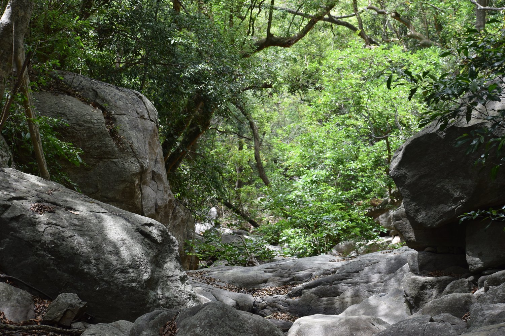
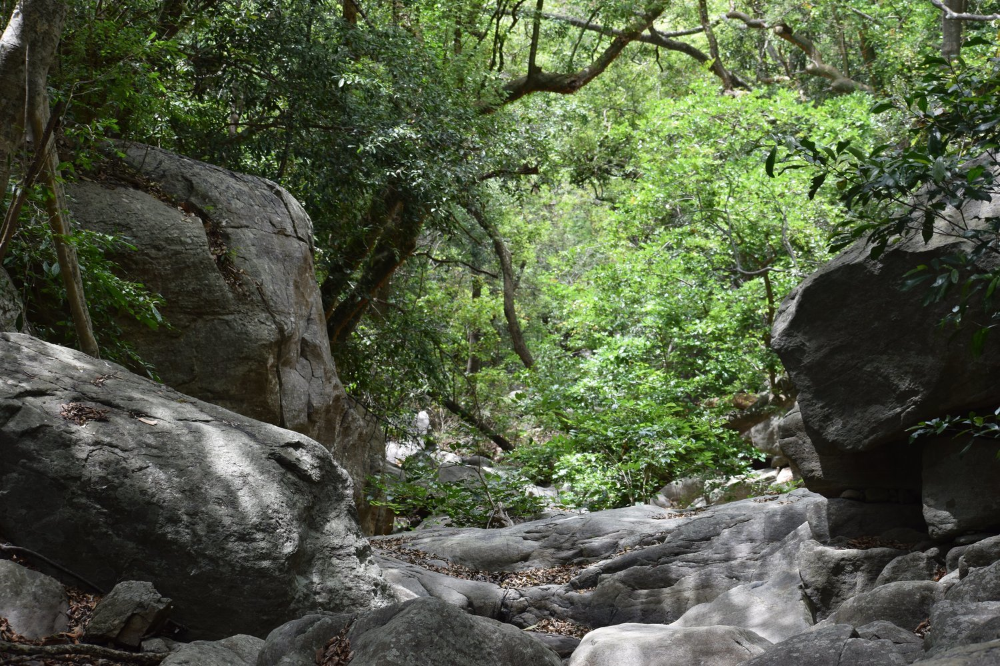

Green Hills
Green Hills Artical
Rivers in the Pachaimalai Hills include the Sweata Nadi and Kallar River. Waterfalls include the Koraiyar Falls, Mangalam Aruvi falls, and Mayil Uthu falls. The VeeraRamar Dam is located on the Kallar River in the hills. The main junctions are Sembulichampatty, Manalodai, ChinnaIluppur, Ramanadhapuram, Topsengattupatti, Sembur, Periyapakalam, Periya nagur, and Mayammbadi.[citation needed] Indigenous tribes such as the Malayalis (not to be confused with malayali of kerala) trade some of their surplus agricultural products they grow in the hills, at towns on the plains for items not available in the hills. Jackfruit is a popular seasonal agriculture product from the hills. Mostly they holding the majority of land in their town. They are cultivating rice and sugarcane. Top sengattuppatti is the main village of thenpuanadu. there are three divisional part of pachamalai hills 1) Vannadu, 2) Thenpuranadu, 3) Aaththinadu.[1] Nearby towns

 

Location On Map contact:9095187861 Trichy,Pachamali,Thenparanadu,Sempur:621011